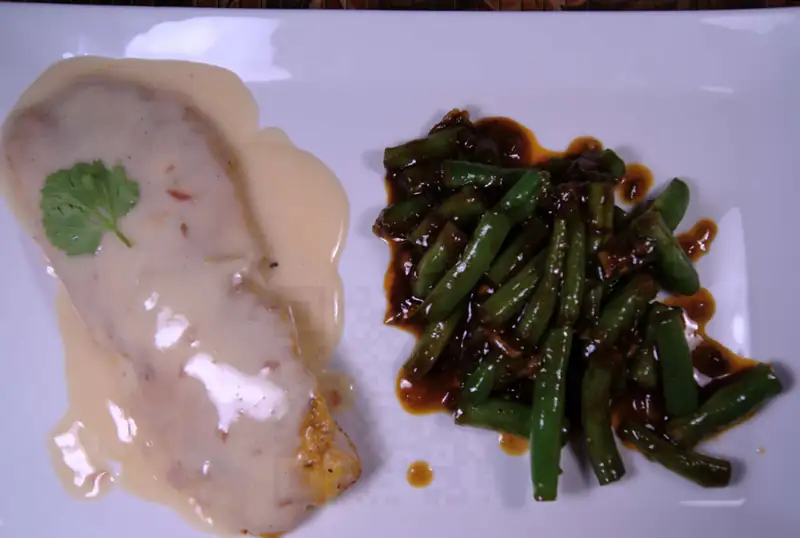

Pescado con beurre blanc

{kind=link}
Un poco de beurre blanc nunca le hizo daño a nadie, especialmente pescado. Bueno, en realidad yo qué se? no soy cardiólogo!!
Para el pescado, como de costumbre, entre más sencilla la preparación, mejor: un poco de harina sazonada y a un sartén caliente. Para el beurre blanc.. pues.. no tan, tan fácil la verdad tiene su chiste esta sala, pero vale la pena tenerle paciencia. La receta viene del programa Good Eats de Alton Brown.
Ingredientes
- 1 a 2 echalotes, finamente picados
- 1 tz vino blanco
- 1/4 tz jugo de limón
- 1 cda crema
- 12 cdas mantequilla fria, sin sal en cubos
- Sal y pimienta al gusto
Procedimiento
- Combina los echalotes, el vino y el jugo de limón en un sartén (no de aluminio o cobre) sobre flama alta y reduce a 2 cucharadas.
- Agrega la crema a la reducción y cuando comience a burbujear reduce el fuego a bajo y comienza a agregar la mantequilla un cubo a la vez, mezclando bien y no agregando otro cubo hasta que se haya derretido el anterior. El truco, si ves el episodio donde lo hizo Alton Brown es quitar la olla del fuego unos segundos mientras sigues derritiendo poco a poco la mantequilla.
- Termina sazonando con sal y pimienta. La salsa se puede/debe guardar en un termo para mantenerla caliente antes de servir.